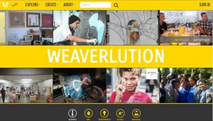
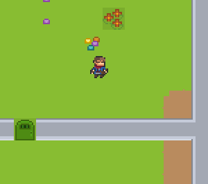

<div class="full_column">
	<br />
	<h2>Overview</h2>
	I currently specialise in front-end web development with
	<a href="https://vuejs.org/" target="_blank" rel="noopener noreferrer">Vue.js</a>
	(and am also happy with
	<a href="https://angular.io/" target="_blank" rel="noopener noreferrer"> Angular.js</a>)
	though I have written all kinds of software:
	<ul>
		<li>full stack ASP.NET & Node.js web sites</li>
		<li>Windows Mobile</li>
		<li>SSIS data transformations & reporting</li>
		<li>.NET Windows desktop apps</li>
		<li>graph theory research in Java</li>
		<li>Phaser.js pixel art game</li>
		<li>PureData generative music</li>
	</ul>

	<br />
	<h2>Apps I've made</h2>
	<br />
	<div class="grid_min300">
		<div>
			<a href="/articles/2015/eccr-the-western-cape-government-health-web-application-for-discharges/" >
				ECCR
			</a>
			<br />
			Electronic medical record for Western Cape government hospitals
			<br />
			<a href="/articles/2015/eccr-the-western-cape-government-health-web-application-for-discharges/" >
				
			</a>
		</div>

		<div>
			<a href="/articles/2016/the-making-of-ekaya-vip-easy-identity-credit-checks-for-tenants/" >
				Ekaya.com
			</a>
			<br />
			Tenant identification & credit check website in the rental industry
			<br />
			<a href="/articles/2016/the-making-of-ekaya-vip-easy-identity-credit-checks-for-tenants/" >
				
			</a>
		</div>

		<div>
			<a href="https://weaverlution.com" target="_blank" rel="noopener noreferrer">
				Weaverlution.com
			</a>
			<br />
			Partnering NGOs with corporate and individual support
			<br />
			<a href="https://weaverlution.com" target="_blank" rel="noopener noreferrer">
				
			</a>
		</div>

		<div>
			<a href="https://richardjecooke.itch.io/escape-from-murder-mansion" target="_blank" rel="noopener noreferrer">
				Escape from murder mansion
			</a>
			<br />
			Phaser.js stealth horrow browser game with binaural sound
			<br />
			<a href="https://richardjecooke.itch.io/escape-from-murder-mansion" target="_blank" rel="noopener noreferrer">
				
			</a>
		</div>
	</div>


	<br /><br />
	<h2>Education</h2>
	<h3>University of Cape Town (UCT)</h3>
	<ul>
		<li><span class="bold">B.Mus</span> in classical composition (2020)</li>
		<li><span class="bold">M.Sc</span> in computer science by <a href="http://pubs.cs.uct.ac.za/archive/00000370/" target="_blank" rel="noopener noreferrer">dissertation</a> (2006)</li>
		<ul>
			<li>distinction</li>
		</ul>
		<li><span class="bold">B.Sc (hons)</span> in computer science (2004)</li>
		<ul>
			<li>class medal</li>
			<li>1st place in professional communication</li>
		</ul>
		<li><span class="bold">B.Bus.Sci (hons)</span> in finance (2003)</li>
	</ul>
	<h3>Diocesan College (high school)</h3>
	<ul>
		<li>95% matric (school leaving) aggregate</li>
	</ul>

	<br />
	<h2>Experience</h2>

	<br />
	<h2>Publications</h2>
	<ul>
		<li>
			<a href="http://pubs.cs.uct.ac.za/archive/00000370/" target="_blank" rel="noopener noreferrer">Link prediction and link detection in sequences of large social networks using temporal and local metrics</a>
			<br />
			UCT masters dissertation, 2006<br /><br />
		</li>
		<li>
			<a href="http://pubs.cs.uct.ac.za/archive/00000309/"  target="_blank" rel="noopener noreferrer">Adaptive Bayesian agents: Enabling distributed social networks</a>
			<br />
			South African Journal of Business Management, vol. 37, no. 1, pp. 41-55<br /><br />
		</li>
		<li>
			<a href="http://pubs.cs.uct.ac.za/archive/00000221/01/Bayesian_Agents.pdf"  target="_blank" rel="noopener noreferrer">Using Bayesian Agents to Enable Distributed Network Knowledge: A Critique</a>
			<br />
			Proceedings 4th International Critical Management Studies Conference, 4-6 July 2005<br /><br />
		</li>
	</ul>

	<h2>Sundry achievements</h2>
	<ul>
		<li>UCT [ZA]Artsong <a href="https://www.youtube.com/watch?v=Qc4_xDFTuXo"  target="_blank" rel="noopener noreferrer">competition winner</a> (2019)</li>
		<li>Microsoft qualification: MCTS & MCP in .NET 3.5 Windows Forms (2010)</li>
		<li>KW Johnstone scholarship (2005)</li>
		<li>Twamley scholarship (2005)</li>
		<li>UCT Spilhaus council scholarship (2005)</li>
		<li>Dean's merit list (2000, 2001, 2017-2019)</li>
		<li>Department of Commerce entrance merit scholarship (2000)</li>
		<li>James Owen Brunt scholarship (2000)</li>
		<li>Grade 8 piano (ABRSM, 2005)</li>
		<li>Grade 7 guitar (ABRSM, 1998)</li>
	</ul>
</div>